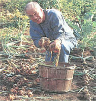

GARDEN & YARD
There are several reasons for calling a vegetable variety your "favorite." Taste is probably the number one reason. Ironically, it is also the most subjective. If all of our taste buds were alike, would there be so many varieties of wine or soda or candy bars?
Selecting a favorite vegetable for its taste is more complex than a simple comparison. Does it taste best fresh from the garden, after being in the refrigerator for a week, boiled, baked, fried, after being frozen, or canned, or stored in the root cellar? If you are growing a 25-foot row of carrots, you are only interested in those that taste best fresh from the garden. If a 50-foot row is planned, you may be interested in how they taste after a week in the fridge. If a couple of hundred feet of row, you are contemplating storage, which can be in a root cellar, frozen, canned, or dried.
Most gardeners have favorites, and many of us will extol the virtues of those vegetables that have found their way into our hearts. Do we know what we are talking about? Not really. To be truly knowledgeable, we have to have compared our favorite with all others. That is mathematically difficult with most vegetables.
Garden produce has been bred for some qualities that gardeners generally are not interested in. Tomatoes have been bred to resist bruising or breaking when harvested by machine. They have even been bred square to fit nicely into four-packs. Beans have been bred to produce prolifically over a short period of time, which makes harvesting easier and faster. This is not a bad consideration for gardeners interested in canning or freezing beans, as long as flavor has not been sacrificed. The best time to freeze vegetables is fresh from the garden. Pick'em, dump 'em in boiling water for a couple of minutes, dump 'em in ice water for a couple of minutes, package and freeze - from garden to freezer in a couple of hours, tops. But if the bean or pea harvest is spread out over several weeks, you may find no single harvest will be yielding enough for immediate freezing.
A gardener in a northern climate might be interested in varieties that are more hardy or have a shorter growing season. I'm not at all interested in some of the things they are trying to do with genetic engineering, though. In fact, it worries me a little. What do I think could happen? They are just plants, after all. They have roots. I don't think they will march upon us - turn on their creators - do I?
Look around you. If you are not already aware of a plant in your area that is not native to the area and is taking over a habitat, make yourself aware. I flew into Oregon one spring a couple of years ago and was amazed at the proliferation of a shrub with yellow flowers that could be seen clearly taking over large areas. In the South the most notorious is kudzu.
What will genetically engineered plants do? I don't know the answer. What is scary and unconscionable is that the scientists who are creating tomatoes that can survive frost and other such "modern miracles" don't have the answer to that question either. "Oh, we're just altering this one gene that will make it hardy." Have you identified the gene that attracts bees to pollinate the plant? How do you know your engineering won't kill bees? Those questions are probably on the lunatic fringe, but I'd feel safer with a lunatic than a well-meaning scientist.
And this leads to another reason to pick favorites: to perpetuate some of the old varieties. One of the things that has happened with plant breeding is the creation of hybrids. The seeds of hybrids will not produce the same plant. This is great for seed companies. Though few of us save seeds anymore, there are many that are very easy to save. Peas, beans, and corn are so easy to save it is a wonder that anyone buys nonhybrid seed. But we do; we buy peas and beans anyway. It is difficult to find open-pollinated corn seed for sale anymore. I had to look in a dozen catalogues last year before I found our old favorite, Golden Bantam. The dilemma is: should I save my own seed to be sure I will always be able to have some, or should I buy it from Territorial Seed Company in appreciation for their carrying it?
Corn
I picked up one catalogue at random and counted 18 sweet corn varieties. I can, and usually do, grow four varieties each year. To simplify the math for a moment, let's say that I am looking for the one perfect variety and that there are only 18 to choose from. Once found, I will grow nothing but that variety. I try four varieties the first year. The second year, I grow the favorite from the first year and three for comparison. The third year, I grow the favorite from the second and three more, and so forth until I have tried them all, which, in this instance, will take six years. Of course, there are many more corn varieties than 18, and some years there may be crop failure, and the qualities you found likable in one year may be forgotten in another. The corn will not all mature at the same time and if you plan to have it mature at the same time, you will have the additional problem of trying to keep it from crosspollinating. If you don't have four varieties of corn fresh from the garden to taste at the same time, how can you fairly compare them for flavor?
We don't plant Golden Bantam every year, though it has always been a favorite. The problem with this variety is that it has a fairly small window of opportunity. It all ripens at about the same time and the period between its being too young and too old is perhaps a week. When it is past its prime, it is too starchy. Territorial says that it has "an excellent reputation for freezing on the cob." We have never done that, but I keep threatening to try. One old gardener told me he just threw them, husk and all, right into the freezer. Sure is easy enough. Maybe it's about time to stop being fresh-corn snobs who will only eat sweet corn when it can be eaten immediately after harvest.
Why is Golden Bantam a favorite? It tastes more like corn than any other our taste buds can recall. We also like that it is open-pollinated. It is a variety that I recall having in the home garden when I was growing up, perhaps a sentimental value.
Silver Queen is a hybrid that has been around a long time and has been in our garden most years. It is a long-season variety that usually just barely squeezes into our short season. At 90-plus days depending on the temperatures, it has to be planted by June 1 at the very latest to be ready for harvest in the first part of September and before the usual first frost about September 20. A couple of years ago, I was swayed by my friend C. R. Lawn at Fedco to try Platinum Lady, a corn he referred to as "the highlight of my sweet corn season ...The most attractive, as well as the most tasty of all sweet corns...no other corn can boast its perfect balance between corny and sugary, its sparkling sweet tender kernels, which hold superb quality over a long picking period..." Who could resist? That year Barbara and I agreed that the "Silver Queen" just wasn't up to par. Had we overrated it? Was it paling by comparison with the earlier coms that year? It wasn't until we hauled out the garden plot for the year that we remembered we were not eating Silver Queen. That is a pretty good taste test.
We have tried many varieties of bicolor corn and found most to be pretty good, but we have not identified any as being extraordinarily good. Part of the problem, of course, is that the four varieties we grow are not grown to mature at the same time for comparison. They are grown to come in one after the other to give us an extended season. We also hope that they will not cross-pollinate. In general, we have found early varieties to be less wonderful than later ones, but we'll keep looking for the perfect early corn.
You may think that I picked the most difficult vegetable, namely corn, for my first comparison, but how do you compare zucchini? Summer squash only takes up about ten square feet of garden space, so more than one hill can be grown in a garden ...but who is going to eat all that zucchini? One plant produces enough zucchini for most families. I am aware of ten different varieties of zucchini. I usually grow just one hill, but I put two plants in the hill so I can compare two varieties if I am careful. A comparison between just two varieties is not very satisfying, but even if it were, it would still take ten years to find a favorite.
When I had a market garden, I grew a 100-foot row of zucchini, so it was possible for me to compare ten varieties at once. My conclusion was that they all tasted about the same, but I liked the growth pattern of one variety. It was open and the zucchini were easy to find and harvest. This doesn't matter much to a gardener because there is (or should be) no hurry while gardening. But to a market gardener, time is money. It makes a difference how long it takes to find the zucchini. (Of course, time is not really money. Time measures our lives, while money measures ...what? How hard you worked? How clever you were? How much you could steal? How much you were given?)
I have abandoned my old favorite zucchini and am searching for a new favorite. Last year I grew Condor. It was easy to harvest and good looking and it tasted just fine. I love zucchini, by the way. Many gardeners are not especially fond of it, I think because it is too easy to grow and not so easy to get rid of. We hate to throw away anything we grow, even if it is going to the compost pile for recycling, but if your friends are gardeners, there is usually a surplus of zucchini at some point during the summer.
I'm trying a new variety this year, Costata Romanesco. It is advertised as the best tasting. Johnny's Selected Seeds catalogue describes it as a "Big, large-leafed bush with only about half the yield as hybrids, but much better-tasting - clearly more starchy, nutty, and delicious, raw or cooked. Also a good producer of heavy male blossom buds for cooking." Since I usually get too much zucchini, a lower yield is not a deterrent and the big leaves that will likely make harvest more challenging will be no problem. My garden seems to be getting crowded, however. We'll have to see how much more room this variety takes up. But if the flavor meets our taste buds favorably, we'll make the space.
In that last paragraph, I touched on several more reasons for choosing one variety over another - yield, ease of harvest, and space requirement. The appearance of Costata Romanesco will probably not make it popular on market shelves, as it is not the glossy dark green we have become accustomed to, but rather a dull gray-green, and it is prominently ribbed. Appearance often comes into play with a gardener's decision to call a vegetable a favorite and appearance may include the plant as well as the fruit.
Zucchini surplus is a hazard that we all have to contend with at some point. There's an old joke in our parts about a city woman who was visiting her country friend. When they went into town to shop, the country woman locked her car and the city friend wondered if there was crime in the area that necessitated locking the car doors. "Heavens, no," she replied. "We lock the doors to keep gardeners from putting zucchini in the car."
I can't remember how we came to think Lincoln peas were the best. During my first ten years of gardening, I coordinated a cooperative seed order. A group of us got together in February and decided which varieties we would order cooperatively. We just ordered from seed catalogues, but there is a considerable difference in price per ounce as the volume goes up. The selection process was a wonderful collaboration, with people talking about why they liked certain varieties, their reasons ranging from the catalogue description to years of experience with the variety. One couple swore by Frosty peas, so we put them on the list for several years. I thought they were woody. Perhaps they would have stayed on the list if their champions had told the rest of us that they were "tricky to pick because [they're] best before the pods are completely filled" (Fedco catalogue).
One year, there was a problem with the crop of Lincoln. The price was high and supply was low. We tried Green Arrow that year and decided that they were comparable to Lincoln. To this day we buy whichever is cheapest. Last year, for the first time, we had a 25-foot row of each and were able to compare them side by side. Green Arrow grow taller and have longer pods and a better yield. They're easiest to pick and to pop. For flavor in the garden side by side, it is difficult to pick a favorite. Lincoln may win on flavor, but Green Arrow has edged it out as our favorite.
We tried Coral, an early variety, last year. Actually, we tried it the year before, but it had been so many years since we had tried anything but Lincoln and Green Arrow I thought the new variety must be a snow or snap pea. I always write down the variety on a garden plot when I plant, but I don't always remember why we chose a particular variety. Barbara's recollection of Coral that first year is that we liked it as a snow or snap pea. My recollection is that I never figured out which it was, which would translate to, "we didn't find it to our liking when eating the pods either young or mature." When it came time to order seeds again, I realized that I had purchased it because C. R. said it was an excellent early pea. I planted the seeds left over from the previous year. We found Coral an excellent early pea as advertised, very tasty, but the yield is small on small plants. We don't mind waiting another week or two for Lincoln or Green Arrow.
When sugarsnap first hit the catalogues, my initial reaction was "what next?" But it was really pretty exciting to have a totally new class of vegetable developed in one's lifetime. I grew them that first year, and the next year I grew them in my market garden. My restaurant customers were overjoyed at having a brand new vegetable that was unavailable anywhere else. Now snap peas can be obtained in supermarkets, but I'll bet that if I go back to market gardening, I can wow my customers with them again.
I didn't grow snap peas for several years. It took C. R. to tell me why. The original sugarsnap grew on a vine that was six or seven feet tall and needed support. Too much hassle for many people, but not to worry: the plant breeders were right there and they bred snap peas down to size. In the process, they lost a lot of the flavor. It is difficult to support vines seven feet off the ground, but if you ever liked snap peas, do it.
I stopped growing dry beans for several years, as well, perhaps because dry beans are not eaten garden fresh, and they take a fair amount of garden space. Organically grown dry beans are probably equal to those I grow myself. One reason for growing them is that they are a legume and are good in a crop rotation. I also like to grow them with potatoes, which is why I grew more in the past. Last year, I grew red kidney beans and black turtle beans. It is probably just my imagination, but the chili and the black bean soup seem especially good this year. Barbara thinks so, too, so it must be true.
Acorn, Buttercup, Blue Hubbard, and Waltham Butternut were the winter squash types of choice for our co-op seed order. In the several years we grew Butternut, we wondered why some people thought it was good. I think the reason is our season is too short and we just never had a mature one. Hubbard is big and stores well, if you can find a good place to store it. We have crossed it off our list. I like acorn but it doesn't store well, so it is just a fall squash. Buttercup has been our favorite throughout - sweet, nice size, and good storage.
We added Delicata to our list a few years ago. It is our true favorite now, being sweet, attractive, small, and with a skin so tender we eat it along with the meat. They keep better than acorn. Amazing that such a tender skin could be on a good winter storage squash.
Speaking of good keepers, Copra onions have been tight, solid, and lovely to eat into July. I planted them from seed in May directly in the garden two years ago. Didn't plant them last year because they didn't become a favorite until July.
Super Red 80 became a favorite cabbage last year when it turned out to be a great keeper. Imagine my pleasure in going back to the catalogues to see what they had to say about its qualities and finding nothing about storage. They just talked about its flavor, good looks, and crispness. I prefer green cabbage, but Barbara loves to have the color to spice up salads and jazz up the plate.
A couple of more new favorites are Brandywine tomatoes and Bright Lights chard. The chard is truly new, just released last year for the first time, an All American award winner from Johnny's Selected Seeds. It is a rainbow of colors that can be harvested young and used in salads or mature and cooked. Burpee's catalogue called it "Gorgeous!"
As gorgeous as Bright Lights chard is, Brandywine tomatoes are ugly. As new as Bright Lights is, Brandywine is old. Brandywine does not produce early tomatoes. The size varies, the shape varies, the yield is poor. Why would anyone grow this poor variety? It is not a hybrid, so the seeds can be saved. I suspect that if that were not the case and if gardeners had not saved the seed for themselves year after year, it would have disappeared totally. The reason it would have disappeared is because all its less-than-wonderful features make it unattractive to seed companies and market growers. The home gardeners who have saved this heirloom did so because it tastes great. It's interesting that from near-extinction, it is now found in nearly all the seed catalogues.
We're through buying pretty tomatoes. This year we're going to try a smorgasbord of tomatoes, many of them heirloom. We have a wonderful guide, Amy LeBlanc. Amy loves tomatoes. She raises seedlings of more than 100 varieties, which she sells in the spring. She has grown all of them and tasted the fruit of all of them. The names of some are irresistible, like Aunt Ruby's German Green, Peacevine, Hillbilly, Tiffen Mennonite, Boxcar Willie, Brimmer, Green Zebra, Aunt Mary's Paste, Bulgarian Triumph, Red Stuffer, and Purple Calabash. Might this be another reason to pick a favorite: its fun name?
ZUCCHINI
Condor: Johnny's
Costata Romanesco: Johnny's, Fedco
CORN
Golden Bantam: Territorial, Seeds of Change
Silver Queen: Shepard's, Fedco
RADISH
Champion: most
LETTUCE
Green Ice: Burpee, Fedco
Buttercrunch: most
PEAS
Lincoln: most
Green Arrow: most
Snap peas/sugarsnap: Fedco, Johnny's
CABBAGE
Super Red 80: Johnny's
ONION
Copra: Johnny's, Fedco
TOMATOES
Brandywine: most
CHARD
Bright Lights: Johnny's introduced, now most
WINTER SQUASH
Delicata: Cooks, Fedco, Johnny's
BEANS, DRY
Black Turtle: Fedco, Johnny's, Burpee
BEETS
Lutz green leaf: most
CARROTS
Nantes Half Long: Burpee
PEPPERS
Ace: most
While it is difficult for a gardener to taste-test some vegetables comprehensively, some lend themselves to this quite nicely. I grew ten varieties of lettuce in my second garden. What is even better is that a packet is always more than you need and the seeds will remain viable for up to ten years. A beginning gardener can get several packets of lettuce and sprinkle just a dozen seeds from each packet in a foot of row or in a flat. Be sure to label each. When they get to be two or three inches high, transplant to space them eight to 12 inches apart. Store the seeds in the refrigerator. Even if you have some you didn't particularly care for, you might try them again another year ...or toss them. Buy more varieties each year and soon, at little annual expense, you will have quite a collection of lettuce varieties. Add other salad greens and you are growing a mesclun mix that will be the envy of the neighborhood. You will find few gardeners who name iceberg among their favorite lettuce varieties. I like iceberg but seldom grow it. It does best if started early and transplanted so it heads in cool weather. It is one of the sweetest and most watery lettuces, which makes it tops for adding moisture to a sandwich. Iceberg and Romaine are: the most popular lettuces commercially, because they are so durable. They ship well and have a good shelf life, whereas leaf lettuces get crushed if packed too tightly and wilt easily. Barbara likes Romaine and will buy it over iceberg in the winter. I think it is tough and sometimes bitter, though she would say "more strongly flavored."
Romaine (or Cos) and iceberg are types of lettuce and there are different varieties within the types. There are also leaf, oakleaf, lollo, crisp, Bibb, and butterhead and most have both green and red varieties. What fun! Though I haven't found a red lettuce that I like better than its green counterpart, I will always plant some because I like the color in the garden. If I didn't plant red lettuce, Barbara would, because she likes the color in salads.
My favorite variety is Green Ice, which was developed by Burpee. It looks great, is easy to grow, stores well in the fridge, is crisp in salads, and has a nice lettucy flavor. I can bring it to maturity anytime during the growing season in Maine. I can't imagine not growing Buttercrunch. It is a Bibb lettuce and has been around a long time. It forms small heads that taste great and have a wonderful texture. It has all of the good qualities of Green Ice as well. If a couple who have been married for 29 years can't agree on which lettuce to buy in midwinter, what good is a list of anyone's favorites? We each, over the years, build partiality to certain plants in the garden for the various reasons I have mentioned and some I have not. That is just one of the fun things about gardening.
A beginning gardener might do well to talk to other gardeners in his or her area. The old timers will know what has worked well for them. Of course, they may have gotten stuck on a particular variety 20 years ago when the choices were fewer. The catalogues are also a great place to "shop" for potential favorites. There, you will always find "New!" varieties and "Customer Favorites" and somebody else's favorites. The catalogues will tell you which is easiest to grow or the sweetest or the hottest or the biggest or the bluest or the reddest or the tenderest or the most uniform or the easiest to harvest or the variety with the biggest yield.
After 25 years of gardening, I am still interested in what other gardeners find wonderful, especially gardeners who are adventuresome and constantly trying new things. Someone may lead me to a radish that I will like better than Champion or a storage beet better than Lutz or a storage carrot better than Nantes Half Long. Each year the seed companies have something new to try.
While some of the new varieties come and go quickly, some, like sugarsnap peas, set a new standard. I have reached the point where I know pretty much what I want from various vegetables, but I can be led astray as I was with the sugarsnaps. I wanted an easier plant to deal with and didn't realize I had sacrificed flavor in the process.
Any time I see a description of a green pepper plant that says it will set fruit in cool weather, I take notice. I don't think Ace peppers are the best tasting and their walls are thin, but they are the only ones I have had consistent success growing.
I only learned how to grow eggplant successfully a couple of years ago so I am just now experimenting with varieties. I've yet to find one I don't like, but it is going to take a while to sort out a favorite, if I ever do. That leaves me wide open to suggestions from any source. Remember the commercial a couple of years ago where people argued over whether the beer "tastes great" or is "less filling"? Gardeners have been having that kind of debate for years.
As always, we keep our ear to the ground for better vegetables, but your letters are the best market research we can think of. Drop us a line if you have a seed, growing, or harvesting tip.
The following source is not a seed company but provides information on growing heirloom veggies. If you want an heirloom seed source list, send $1 and a self-addressed stamped envelope to:
Amy LeBlanc
Whitehill Farm
P. O. Box 273
East Wilton, ME 04234
Seedsavers Exchange
3076 North Winn Road
Decorah, IA 52101
(319)382-5900
W. Atlee Burpee & Co.
300 Park Avenue
Warminster, PA 18974
800-888-1447
www.burpee.com
The Cook's Garden
P.O. Box 535
Londonderry, VT 05148
800-457-9703
Fedco Seeds
P.O. Box 520
Waterville, ME 04903-0520
(207)873-7333
Harris Seeds
P.O. Box 22960
Rochester, NY 14692-2960
(716)442-0410
Johnny's Selected Seeds
Foss Hill Road
Albion, ME 04910-9731
(207)437-4301
homegarden@johnnyseeds.com
Park Seed
1 Parkton Avenue
Greenwood, SC 29647-0001
800-845-3369
info@parkseed.com
Seeds of Change
P.O. Box 15700
Santa Fe, NM 87506-5700
888-762-7333
gardener@seedsofchange.com
Shepherd's Garden Seeds
30 Irene Street
Torrington, CT 06790
(860)482-3638
Stokes Seeds
P.O. Box 548
Buffalo, NY 14240-0548
(716)695-6980
Territorial Seed Company
P.O. Box 157
Cottage Grove, OR 97424-0061
(541)942-9547
www.territorial-seed.com
Thompson & Morgan
P.O. Box 1308
Jackson, NJ 08527-0308
(732)363-2225
|
PHOTO: SCOTT VLAUN Mort displays two handfuls of his black turtle bean harvest |
PHOTO: SCOTT VLAUN A-maizing: Golden Bantam corn. |
I usually plant four varieties of corn, each maturing at a different time, to give us an extended season. |
|
Delicata squash has a surprisingly tender skin. |
Mort digs this year's crop of onions. |
Brandywine: proof that looks aren't everything. |
|
Bright Lights Swiss: a truly new, gorgeous chard. |
|
|
|
 |
|
|
|
|
|
|